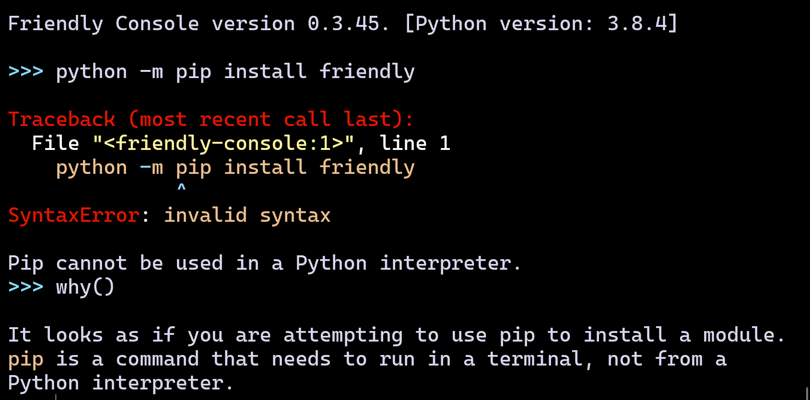

About friendly
PyCon Lightning Talk - May 14, 2021
André Roberge
See PyCon's Education Summit
<Aside>
What's new in Python 3.10?
Improved tracebacks!
Thanks to many people, but mostly Pablo Galindo Salgado.May 8: PEP 657
Include Fine Grained Error Locations in Tracebacks
Traceback ...
print(x[42][1][2][3][4])
^^^^^^^^^^^^^^
TypeError: 'NoneType' object is not subscriptable
</Aside>
What is friendly?
Library providing help with tracebacks.
why()
where()
Python 3.6+
what()
SyntaxError: invalid syntax
www()
Python 3.10: NameError, AttributeError
Python 3.10: Jupyter

# terminal, VS Code, etc.
from friendly import ...
# Special cases
from friendly.idle import ...
from friendly.mu import ...
from friendly.ipython import ...
from friendly.jupyter import ...
> python -m pip install friendly
> python -m friendly
Friendly Console version ...
>>>
>>> www()